Mechanics: is a branch of science that deals with the action of forces on bodies and of the effects they produce.
Machines: are mechanical devices used to accomplish work. A machine is defines as a combination of resistance bodies, whose relative motions are completely constrained and by means of which the natural energies at our disposal may be converted into any form of work. The behaviour and performance of machines can be analysed by application of the principles of mechanics.
Mechanics of Machines: is defined as that branch of science, which deals with the study of relative motion between the various parts of machine, and forces which act on them.
Mechanics of Machines can be sub-divided into the following two branches:
1. Statics: is that branch of Mechanics of Machines which deals with the forces and their effects, while the machine parts are rest.
2. Dynamics: is that branch of Mechanics of Machines which deals with the forces and their effects, while the machine parts are in motion. Dynamics is divided into Kinematics and kinetics
(i) Kinematics: is a branch of Mechanics of Machines which studies the motion of bodies without reference to the forces, which are causes this motion, i.e it relates the motion variables (displacement, velocity, acceleration) with the time.
(ii) Kinetics: is that branch of Mechanics of Machines which relates the action of forces on bodies to their resulting motion.
Mechanism: is a combination of rigid bodies which are formed and connected together by some means, to transfer motion and forces from a power input to output. It is considered to be heart of machine. Some of the examples of mechanism are provided below:
(i) Grashof four bar mechanism (Fig.1(a)),
(ii) Slider crank mechanism (Fig.1(b)),
(iii) Scotch Yoke Mechanism (Fig.1(c)),
(iv) Elliptical Trammel (Fig.1(d)),
(v) Tchebichev Straight Line Mechanism (Fig.1(e)),
(vi) Peaucellier Straight Line Mechanism (Fig.1(f)),
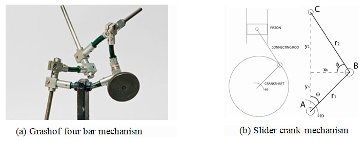
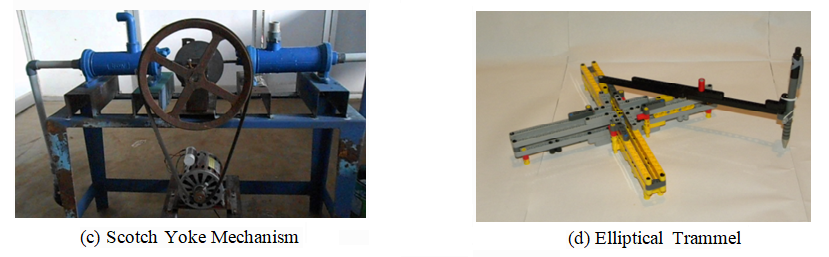
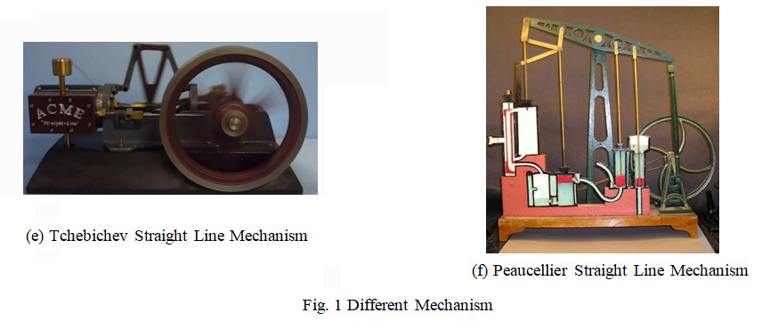
The analysis of mechanisms is a part of machine design which is concerned with the dynamics of mechanisms. Mechanism consists of links (rigid bars, gears, chains and sprockets, belts and pulleys, cams etc.) and joints.
Links: are rigid bodies each having hinged holes or slot to be connected together by some means to constitute a mechanism which able to transmit motion or forces to some another locations.
Rigid Body: is that body whose changes in shape are negligible compared with its overall dimensions or with the changes in position of the body as a whole, such as rigid link, rigid disc etc.
Degrees of Freedom of a Rigid Body: The degrees of freedom (DOF) of a rigid body, is defined as the number of independent movements it has. To determine the DOF of this body we must consider how many distinct ways the bar can be moved. In a two dimensional plane such as this computer screen, there are 3 DOF. The bar can be translated along the x axis, translated along the y axis, and rotated about its centroid. An unrestrained rigid body in space has six degrees of freedom: three translating motions along the x, y and z axes and three rotary motions around the x, y and z axes respectively.
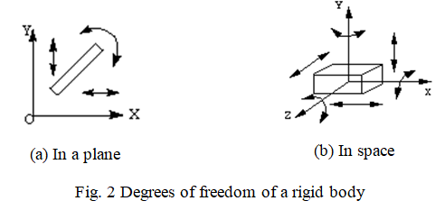
The rigid bodies are connected in different combination of (i) Hinged and (ii) Sliding connections to achieve a mechanism:
Hinged Connection: The hinged connections are used to connect the links together or connect a link to a fixed point, piston, disc etc. The connection is achieved using pin, which is pass through the hinge holes, as shown is Fig. 3(a).
Sliding Connection: The sliding connections are used to connect two links rotate about fixed points by means of slot, pin and hinge, as shown is Fig. 3(b).
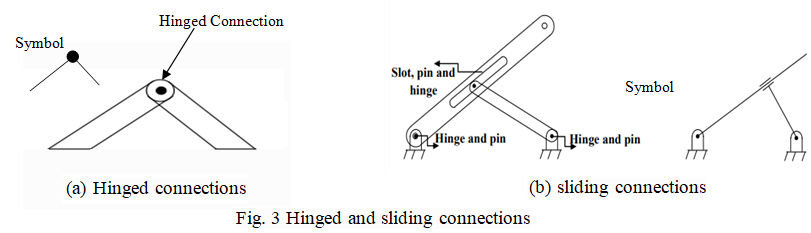
Kinematic Pairs
The motion of the independent rigid bodies can be hindered with kinematic constraints. Kinematic constraints are constraints between rigid bodies that result in the decrease of the degrees of freedom of rigid body system.
Kinematic constraints between rigid bodies are termed as kinematic pairs. A pair is a joint between the surfaces of two rigid bodies that keeps them in contact and relatively movable. For example, a door jointed to the frame with hinges makes revolute joint (pin joint), allowing the door to be turned around its axis. The kinematic pairs are divided into lower pairs and higher pairs, depending on how the two bodies are in contact. Surface-contact pairs are called lower pairs. In planar (2D) mechanisms, there are two subcategories of lower pairs, revolute pairs and prismatic pairs. Point, line, or curve contact pairs are called higher pairs.
In every machine, at least one link either occupies a fixed position relative to the earth or carries the machine as a whole along with it during motion. This link is the frame of the machine and is called the fixed link. The combination of links and pairs without a fixed link is not a mechanism but is called as kinematic chain.
A four bar chain is the most fundamental of the plane kinematics chains. It is a much preferred mechanical device for the mechanisation and control of motions due to simplicity and versatility. A four bar chain consists of four rigid links which are connected in the form of a quadrilateral by four pin joints. When one of the links is fixed, it is called as linkage or mechanism. The link that makes a complete revolution is called as crack, the link opposite to the fixed link is called as coupler and the fourth link is called as rocker or lever if it oscillates or another crank if it rotates.
Grashof four bar mechanism
The four bar linkage system is called as Grashof four bar mechanism if they follow Grashof’s law. The law states that for a four-bar linkage system, the sum of the shortest and longest link of a planar quadrilateral linkage has to be lesser than or equal to the sum of the remaining two links, then the shortest link can rotate fully with respect to a neighbouring link. Denote the smallest link by S, the longest link by L and the other two links by P and Q. If the Grashof’s Law condition is satisfied i.e S+L ≤ P+Q, then depending on whether shortest link ‘S’ is connected to the ground by one end, two ends, or no end there are 3 possible mechanisms and they are provided in Fig. 4.
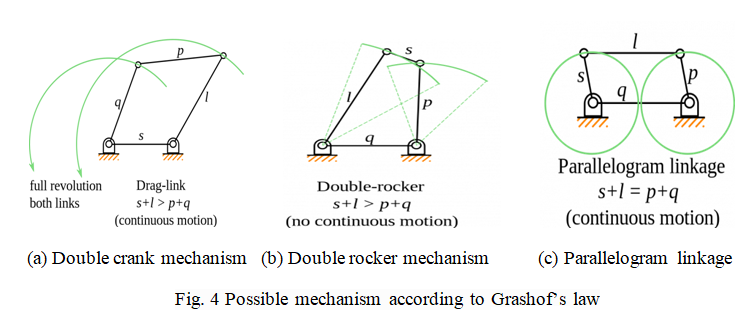
Slider crank mechanism
The slider-crank mechanism is a particular four-bar linkage configuration that converts linear motion to rotational, or vice versa. Internal combustion engines are a common example of this mechanism, where combustion in a cylinder creates pressure which drives a piston. The piston’s linear motion is converted into rotational motion at the crank through a mutual link, referred to as the connecting rod, as shown in Fig.5. As the geometry of the crank forces the conversion of linear motion to rotational, shaking forces are generated and applied to the crank’s housing.
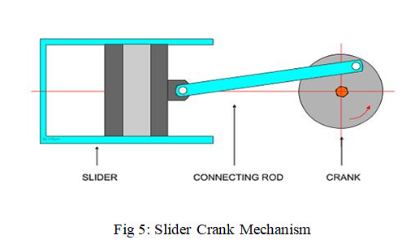
The slider-crank mechanism is frequently utilized to investigate machine kinematics and resulting dynamic forces. The position, velocity, acceleration and shaking forces generated by a slider-crank mechanism during operation can be determined analytically.
Scotch Yoke Mechanism
The Scotch yoke (also known as slotted link mechanism) shown in Fig.6, is a reciprocating motion mechanism, which convert the linear motion of a slider into rotational motion, or vice versa. The piston or other reciprocating part is directly coupled to a sliding yoke with a slot that engages a pin on the rotating part. This mechanism setup is most commonly used in control valve actuators in high-pressure oil and gas pipelines.
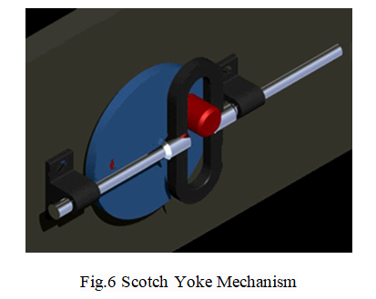
Elliptical Trammel Mechanism
The Elliptical Trammel (also known as the Trammel of Archimedes) is a simple mechanism which can trace an exact elliptical path. Fig.7 shows the geometry of this mechanism, which consists of two prismatic (or sliding) joints and two revolute (or rotational) joints. These joints guide the movement of a central rigid body.
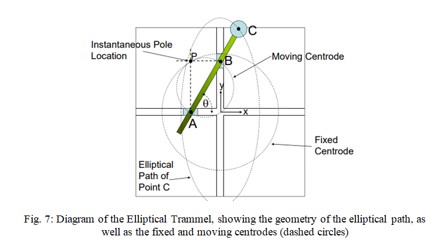
Chebyshev's Straight Line Mechanism
The Chebyshev straight line mechanism shown in Fig.8, is also a four bar linkage mechanism that hs both historically as well as practical importance. After the invention of steam engine and straight line mechanism by Watt a range of straight line mechanisms were designed. Chebyshev's mechanism is the first mechanism to be designed after Watt's linkage by a Russian Mathematician Pafnuty Chebyshev. This mechanism was invariable used for linear guidance of the piston and valves.
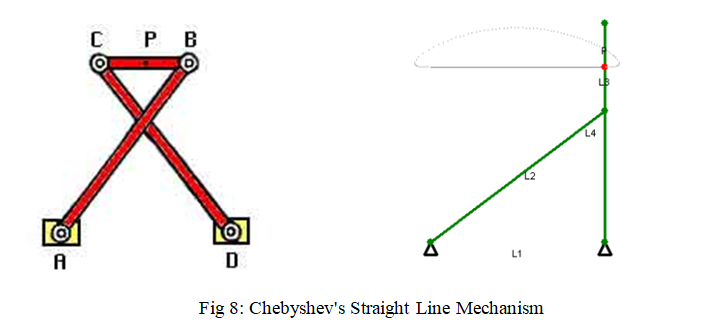
The straight-line linkage confines the point P – the midpoint on the link L3 – on a straight line at the two extremes and at the centre of travel. (L1, L2, L3, and L4 are as shown in the Fig. 8.) Between those points, point P deviates slightly from a perfect straight line. The proportions between the links are L1: L2: L3 = 2:2.5:1 = 4:5:2. Point P is in the middle of L3. This relationship assures that the link L3 lies vertically when it is at one of the extremes of its travel.
The lengths are related mathematically as follows:
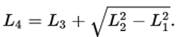
The Peaucellier–Lipkin linkage
The Peaucellier–Lipkin linkage shown in Fig.9, is the first planar straight line mechanism capable of transforming rotary motion into perfect straight-line motion. Until this invention, no planar method existed of producing straight motion without reference guideways, making the linkage especially important as a machine component and for manufacturing. In particular, a piston head needs to keep a good seal with the shaft in order to retain the driving (or driven) medium. The mathematics of the Peaucellier–Lipkin linkage is directly related to the inversion of a circle.
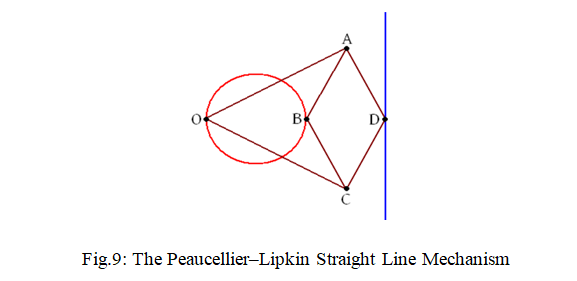
In the geometric diagram of the apparatus, six bars of fixed length can be seen: OA, OC, AB, BC, CD, DA. The length of OA is equal to the length of OC, and the lengths of AB, BC, CD, and DA are all equal forming a rhombus. Also, point O is fixed. Then, if point B is con strained to move along a circle (shown in red) which passes the rough O, then point D will necessarily have to move along a straight line (shown in blue). On the other hand, if point B were constrained to move along a line (not passing through O), then point D would necessarily have to move along a circle (passing through O).
Hart Straight Line Mechanism
Hart Straight Line Mechanism shown in Fig.10, transforms rotational movement of point B to straight-line movement of points H and F. H and F move on two orthogonal lines passing through the center of rotation A.

Here Link [ABE] rotates about the fixed A. Links have constant length. The point D is fixed and the following relations hold:
- AB = BC, AD = DA
- CG = GF, AE = EH = EF
- Triangles AEF and FGC are similar
- Angle BCF is orthogonal
Here are some points to play with links in the mechanism:
- The points of FH describe ellipses.
- The length of link AB is modified by moving I
- The length of link AD is modified by moving D


This course is primarily for the sophomores of Bachelor's course in Mechanical Engineering.
This course is also useful for diploma students and for robotics enthusiasts.

Following are the courses in which one can come across the theory connected to the experiments in this lab
- Engineering Mechanics
- Theory of Machines
- Kinematics of Machines
You can find a list of other related labs here

Course Pre-requisites
This lab is related to a basic course in Mechanisms.
There are no mandatory pre-requisite however it does require a basic understanding of vectors mathematics and engineering mechanics
Software Requirement
Adobe Flash Plugin is needed to run some of the simulation experiments on the browser. You can download it for free here. Kindly wait for flash file to load when opening a simulation. Depending on your internet connection speed and the number of users accessing our site it may take a minute.
For Javascript based simulations you do not need Adobe Flash however Javascript must be enabled in your browser. Please use latest Mozilla Firefox or Google Chrome browser for best results